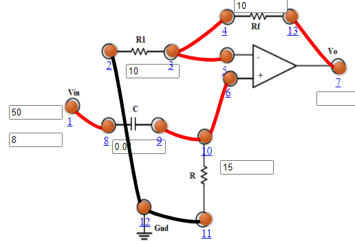

Objective
Objective of Experiment

Pre Quiz
Test Your Knowledge!!

Theory
Theory of Experiment
Procedure
- Active Low Pass Filter
- Connect the components as mentioned below:
L1-L8, L3-L4 or L4-L5, L3-L5, L6-L10 or L6-L9, L9-L10, L7-L13, L2-L12, L11-L12.(For eg. click on 1 and then drag to 8 and so on.) - Click on 'Check Connection' button to check the connections.
- If connected wrong click on 'Delete all connection' button to erase all the connections.
- Set Resistance(R1)=10 KΩ.
- Set Resistance(Rf)=10 KΩ.
- Set Resistance(R)=15 KΩ.
- Set Capacitor(C)=0.01 µF.
- The source voltage (Vin) is set to 10V.
- Keeping source voltage constant, vary the frequency from 50 Hz in regular steps.
- Click on "Add to Table" button to add the readings to the table.
- Vary the Frequency by keeping the resistances and capacitance constant.
- Select "Plot" button to plot the frequency graph or the phase graph of the RC frequency, Frequency(Hz) along X-axis and Magnitude along Y-axis.
- Click on "Clear" button to take another set of readings.
- Active High Pass Filter
- Connect the components as mentioned below:
L1-L8, L3-L4 or L4-L5, L3-L5, L6-L10 or L6-L9, L9-L10, L7-L13, L2-L12, L11-L12.(For eg. click on 1 and then drag to 8 and so on.) - Click on 'Check Connection' button to check the connections.
- If connected wrong click on 'Delete all connection' button to erase all the connections.
- Set Resistance(R1)=10 KΩ.
- Set Resistance(Rf)=10 KΩ.
- Set Resistance(R)=15 KΩ.
- Set Capacitor(C)=0.01 µF.
- The source voltage (Vin) is set to 10V.
- Keeping source voltage constant, vary the frequency from 50 Hz in regular steps.
- Click on "Add to Table" button to add the readings to the table.
- Vary the Frequency by keeping the resistances and capacitance constant.
- Select "Plot" button to plot the frequency graph or the phase graph of the RC frequency, Frequency(Hz) along X-axis and Magnitude along Y-axis.
- Click on "Clear" button to take another set of readings.
- Active Band Pass Filter
- Connect the components as mentioned below:
L1-L10, L3-L12, L12-L14, L11-L13, L8-L13 or L8-L11, L4-L7, L4-L5 or L5-L7, L6-L9, L9-L20, L2-L22, L22-L24, L21-L23, L18-L23 or L21-L18, L25-L17, L25-L15 or L15-L17, L16-L19.(For eg. click on 1 and then drag to 8 and so on.) - Click on 'Check Connection' button to check the connections.
- If connected wrong click on 'Delete all connection' button to erase all the connections.
- Set Resistance(R1 and R'1)=10 KΩ.
- Set Resistance(Rf and R'f)=10 KΩ.
- Set Resistance(R)=20 KΩ.
- Set Capacitor(C)=0.05 µF.
- Set Resistance(R')=20 KΩ.
- Set Capacitor(C')=0.01 µF.
- The source voltage (Vin) is set to 10V.
- Keeping source voltage constant, vary the frequency from 50 Hz in regular steps.
- Click on "Add to Table" button to add the readings to the table.
- Vary the Frequency by keeping the resistances and capacitance constant.
- Select "Plot" button to plot the frequency graph or the phase graph of the RC frequency, Frequency(Hz) along X-axis and Magnitude along Y-axis.
- Click on "Clear" button to take another set of readings.

Figure:1

Figure:2
Figure:3
Simulator
Post Quiz
Test Your Knowledge!!

Reference
Books